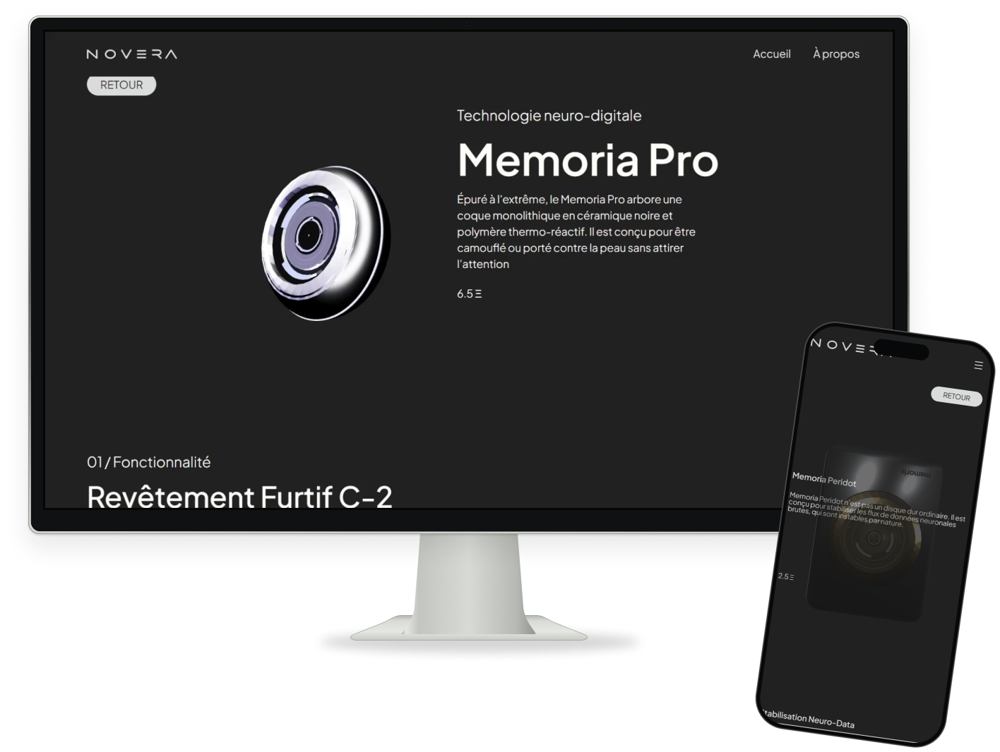
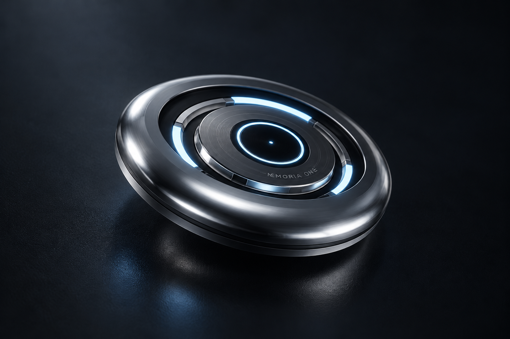

Développement du site web Memoria
Développement du site web Memoria
Web/3D
Zack Lamontagne
2026

Web/3D
Zack Lamontagne
2026
01
Contexte
Site web réalisé en contexte de Webjam (36 heures maximum) en équipe de 4 . le thème étant un objet clandestin , nous avons opté pour un site web non conventionnel en scroll horizontal . Ce qui nous à causer plusieurs défis en cours de route

02
Immersion
L’immersion et l’aspect clandestin était notre priorité , notre design découle de cette aspect clandestin et élitiste , faisant de Memoria un site web vitrine et presque innaccessible.
03
3D
J’étais en charge de tous les modèles 3D , j’ai commencer en modélisant 3 variation de Memoria (modèle 3d ci dessous). Pour les autres modèles, j’ai fait un modèle de base que j’ai poli avec de l’IA.
04
Intégration et Wordpress
Nous sommes trois à avoir travaillé sur l’intégration Wordpress s. Nous avons surprenament eu très peu de conflit Github, mais par dessus tout j’ai beaucoup appris à collaborer sur un même projet.

05
Résultat final
Site web
→
Bref, Memoria et le webjam en soit étais définitivement une expérience , malgré le fait que le site web a besoin de quelques ajustements , je crois que j’ai fait ma part. Nous avons gagné la mention innovation.

Repenser le site avec une approche fonctionnelle tout en conservant son identité visuelle.

Design et Intégration Web d’un portfolio étudiant en contexte...

Le concept est inspiré des jeux idle. Pour ce qui est du design, j’ai essayé de me rapprocher du...

Mines et Bombes est un projet personnel programmer entièrement par moi même...

Tous les projets
→